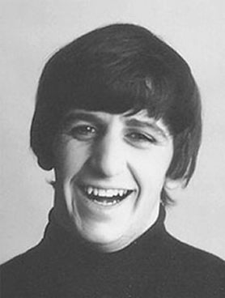

FAST FACTS!
Born: Liverpool, England (July 7, 1940)
Before he joined the Beatles, he was part of another Liverpool band called Rory Storm and the Hurricanes.
Some may think he's underrated, but he's known for his humility, which is what defines as a legendary drummer. He avoids doing drums solos.
He was the lead singer for the songs "Yellow Submarine" and "With a Little Help from My Friends". During the recording of the latter, the other Beatles stood around him for encouragement, especially when he was worried of singing the high notes. He wrote the songs "Don't Pass Me By" and "Octopus's Garden".
He was married to his first wife Maureen from 1965 to 1975. They had three children, Zak, who is also a drummer, Jason, and a daughter, Lee. Since 1981, He's been married to Barbara Bach, a former Bond girl.
The Who's drummer, Keith Moon, was Zak Starkey's godfather.
He is currently well-known for Ringo Starr and his All-Starr band, which he established in 1989. It brings together many well-known artists, both soloists and members of other bands.
Some of his solo hits include, "It Don't Come Easy", "Photograph", "You're Sixteen" and "Back Off Boogaloo".